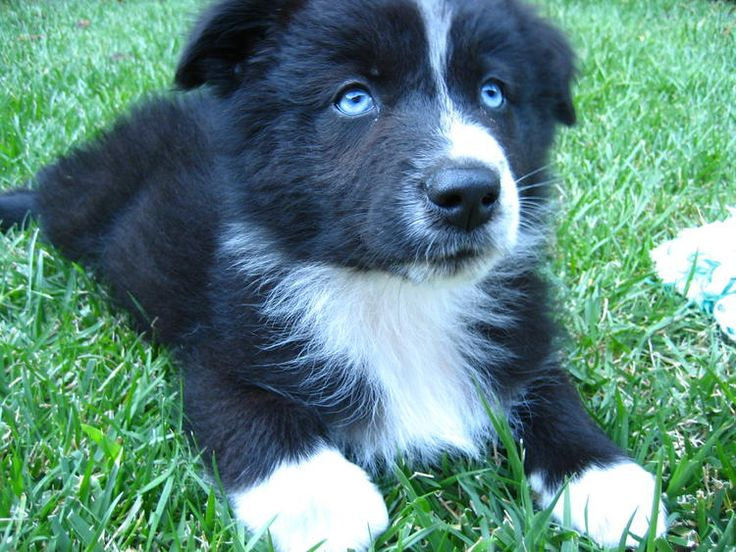
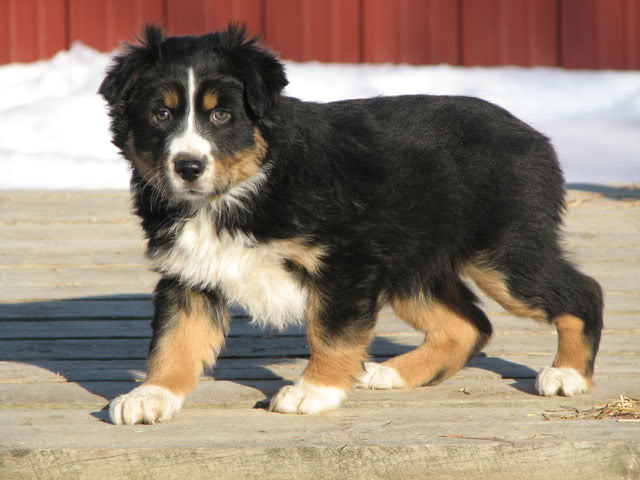
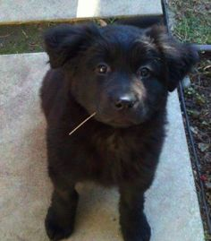

Australian Shepherds are otherwise known as Aussies! Despite their name Australian shepherds are not from Australia.
They were bred in North America during the gold rush in the 1840’s as a work dog to help famers with livestock. Aussie’s or Australian shepherds still have their work dog attitude even today and are happiest when they have a job to do.
Aussie’s can be outstanding companions if their intelligence and high energy are geared toward activities and dog sports.
 Merle
Merle
Bicolor
Tricolor
Solid
Follow us onto the next page to find out more information about Australian Shepherds and Boxers.
I am the author of this Website and my name is Lydia Krasucki. I created this pilot website for school.